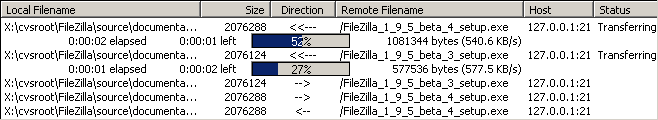

The Transfer Queue
Overview
Every time you want to transfer a file with FileZilla, the transfer will be put into the Transfer Queue. Whenever you want to transfer more than one file, a queue becomes necessary. The queue decides which file will be transferred next.

Each line in the list represents a separate file transfer. The column headers describe the meaning of each column.
Local Filename is the local file that will be uploaded or the local file in which a downloaded file will be saved.
Size indicates the total size of the transfer.
Direction tells you whether the file will be uploaded (->) or downloaded (<-) It also indicates the priority of a transfer. A single arrow (-> or <-) stands for transfers that were added to the queue for later transfers. A double arrow (->> or <<-) stands for transfers that were initiated directly, the high priority transfers. High priority transfers get transferred first. When you add a new file to the queue, it gets placed below the last item of the same priority.
Remote Filename indicates the remote file that will be downloaded or the remote file in which an uploaded file will be saved.
Host is the address of the server involved in the transfer.
Status displays some information about the transfers. Some status messages are: "Transferring", "Transfer Error #x, "Trying again later", "Transfer aborted", "Critical transfer error" or "Too many retries". In the last three cases you have to reset the status of the transfer with the context menu if you want to retry to transfer the file later.
Context Menu
Right-click the queue to open the context menu.
| Process Queue | - | Starts processing the queue. |
| Remove from Queue | - | Removes an item from the queue |
| Reset Status | - | Resets the status of an item. Old status has to be "Transfer aborted", "Critical transfer error" or "Too many retries" |
| Move up | - | Moves the selected items up. * |
| Move down | - | Moves the selected items down. * |
| Move to top | - | Moves the selected items to the top of the queue. * |
| Move to bottom | - | Moves the selected items to the bottom of the queue. * |
* Please note that a low priority transfer can never be higher than a high priority transfer and vice versa.